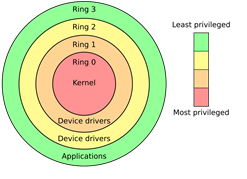

Coreboot is an open source replacement for the proprietary BIOS/UEFI firmware. It also gives you the ability to disable the Intel Management Engine (IME), the built-in "backdoor" in all Intel CPUs since 2008. IMEruns its own OS Mimrix on ring -3, even when the computer is turned off, and has full access to RAM and network. Several serious vulnerabilities have been found in the IME, giving the attacker higher privileges than the operating system running on the hardware. https://www.youtube.com/watch?v=Lr-9aCMUXzI
What even is coreboot and why would you want to do this?

Specifically, on the T520, Coreboot also gives you the option to run 3rd generation Intel CPUs, which is not possible with the stock BIOS.
What do we need?
A computer compatible with coreboot (T520). You can find them here.(not updated) or in the git repo.
A second computer to do the flashing.
Rasberry pi/CH341*/other chip flashing tool
Step by step instructions
First step is to dump the current bios WITH THE COMPUTER DISCONNECTED FROM POWER!
To acces the bios chip we need to remove the keyboard and top shell. You can use the Hardware Maintenance Manual for instructions.
Connect the SOIC8 clip to the BIOS chip (make a note of the chip name, you may need it), you may not be able to fit the clip due to the rollcage, I just grinded down the side of the clip, alternatively you can take out the whole motherboard.
https://libreboot.org/docs/install/spi.html You can use this guide to help you out.

Now install flashrom on the second computer and connect the Flasher.
Now run (im using CH341):
flashrom -p ch341a_spi -r dump.bin
you should make 2 dumps and check if they are the same using: diff dump1.bin dump2.bin
lets build the coreboot repo:
git clone --recursive https://review.coreboot.org/coreboot.git
cd coreboot
mkdir -p 3rdparty/blobs/mainboard/lenovo/t520
make crossgcc-i386 CPUS=$(nproc)
cd util/ifdtool && make install
Now we can neuter the ME firmware
copy the bios dump to the coreboot repo
python util/me_cleaner/me_cleaner.py -S -O modified_image.bin original_dump.bin
now run: ifdtool -x modified_image.bin
In the directory shoud now be 4 new files flashregion_*.bin rename them to descriptor.bin, me.bin and gbe.bin and copy them to the 3rdparty/blobs/mainboard/lenovo/t520 directory.
Configuring coreboot:
Run: make nconfig
Now you need to configure the coreboot. I will list some basic things to configure, but do your own research.
Mainboard
Mainboard vendor (Lenovo)
Mainboard model (ThinkPad T520)
ROM chip size (sould be 8mb) same as the dump size, was also outputted by flashrom
Chipset
Beep on fatal error
Flash LEDs on fatal error
Add Intel descriptor.bin file
Add Intel ME/TXE firmware
Add gigabit ethernet firmware
(paths to the files should match the names used previously)
Payloads
Beep on fatal error Do your research, but I usually use SeaBIOS or GRUB.
Now compile the coreboot using: make and flash using:
flashrom -p ch341a_spi -w coreboot.rom
flashrom -p ch341a_spi -v coreboot.rom
Now disconnect the flasher and power on the computer. If everything went well you should be greeted with coreboot.
Now you can install 3rd generation Intel CPUs like I7-3940XM, but I would recommend to get a 125/170W PSU and upgrade the cooling.